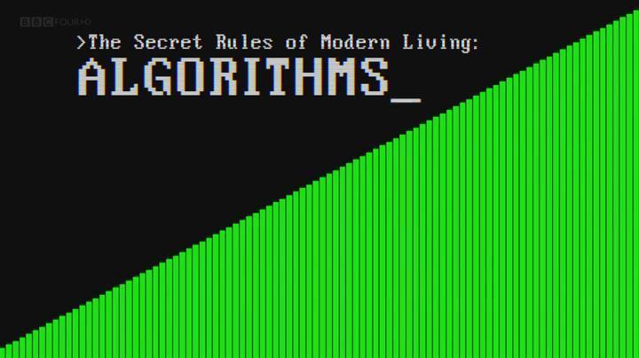
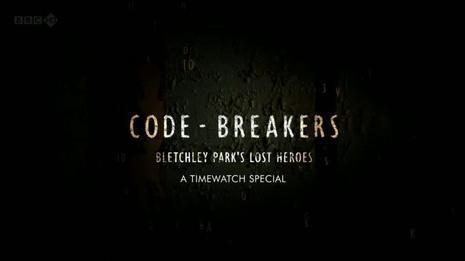
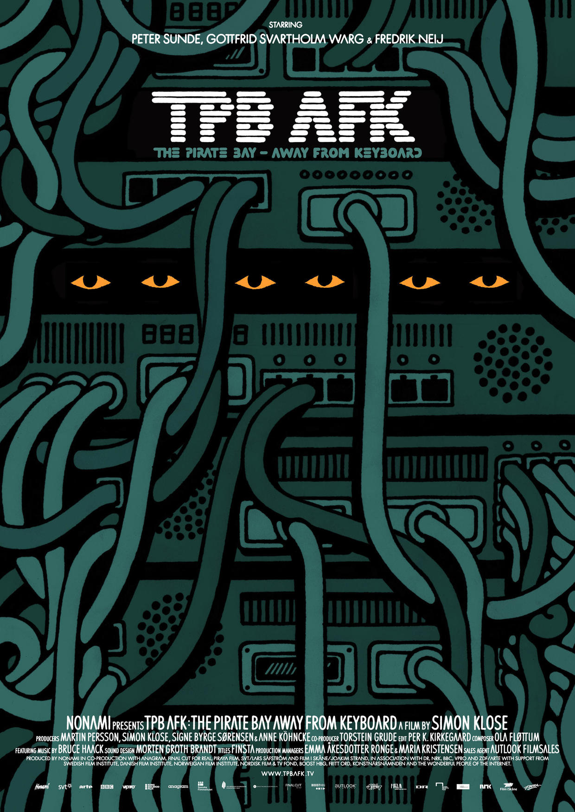

この記事で紹介する映画からは、さまざまなプログラマーを見ることができます。彼らの中には、才能にあふれ、14歳でRSS 1.0仕様を生み出し、インターネット全体に足跡を残しながらも、若くして亡くなった人もいます。自分の世界に生き、自らの理想を守り続け、他人に左右されない考えを持つ人もいます。会社を救うために全力を尽くし、決してあきらめない精神を映画の中で余すところなく見せてくれる人もいます。生死を顧みず、あまり知られていない真実を暴き出す人もいます...
1、インターネットの子（The Internet's Own Boy: The Story of Aaron Swartz）

作品紹介：
スワルツは早くからネットワーク標準の策定に参加し、14歳でRSS 1.0仕様の作成に関わりました。その頃から彼はW3C RDFコアワーキンググループのメンバーとなり、John Gruberとともにマークアップ言語Markdownを設計し（簡書で使われているエディタにはMarkdownがあります）、他の多くのプロジェクトにも参加しました。スワルツは2006年に网ok ever published")を設立しました。スワルツは早くも2000年にはwiki技術を用いて「theinfo」百科事典プロジェクトを開発しました。彼の会社のバックエンドもwikiで構築されていました。スワルツはスタンフォード大学に在籍していましたが、すぐに中退してソフトウェア会社Infogamiを設立しました。アーロン・スワルツはソーシャルニュースサイトRedditの3人の共同創設者の一人でもあります。2006年初頭にInfogamiはRedditと合併し、2006年末に出版会社コンデナストに売却されました。スワルツは20歳の誕生日の前に保有株式を売却しました。スワルツは2006年、wiki技術を用いてオンライン無料図書館Open Libraryを設立しました。その目的は、かつて出版されたすべての本がそれぞれ独自のウェブページを持つこと（"one web page for every book ever published"）でした。スワルツは2010年、インターネット検閲に反対するDemand Progressを設立しました。この団体は電子メールやその他のメディアを通じて大衆を組織し、特定の議題について議員やその他のオピニオンリーダーに意見を表明し、圧力をかけました。2011年7月19日、スワルツはデジタル窃盗の罪で逮捕され、MITとJSTORから480万件の学術論文をダウンロードしたとして起訴されました。彼は10万ドルの保釈金を支払った後に釈放されました。スワルツは外付けハードドライブを使用し、物理的に接触する方法でMITの内部ネットワークからスクリプトを実行してJSTORの論文をダウンロードしていました。2013年1月、自殺によりこの世を去りました。
素晴らしい映画レビュー：
冒頭を見てすぐ、彼らは彼は世界とあまりうまく調和できない人で、世界も彼にあまり優しくないと言った。すぐに自分のことを思い浮かべ、そして彼がうつ病になるかもしれないとすでに推測していた。なぜなら、こうした才能にあふれ、伝統と相容れない人は、たいてい伝説になるか、犠牲になるかのどちらかだからだ。もちろん、どちらか一方だけを手にする人は少なく、より多くは、両方とも得るか、両方とも捨てるかのどちらかだ。例えばスワルツのように。
2、インディー・ゲーム ザ・ムービー（Indie Game: The Movie）
作品紹介：
『インディー・ゲーム ザ・ムービー（Indie Game: The Movie）』は、インディーゲームに関するドキュメンタリーで、インディーゲームの過去の素晴らしい物語を描いています。21世紀の到来とともに、新たな種類の独立系アーティストが誕生しました。それがインディーゲーム開発者です。彼らは独自の発想、特別なデザイン、そして個性豊かなゲームを持っています。もちろん、彼らも成功を望んでいます。映画では、デザイナーのEdmund McMillenとプログラマーのTommy Refenesが2年間の努力を経て、彼らの最初のXBOX用ゲーム『Super Meat Boy』（スーパーミートボーイ）のリリースを待っています。このゲームは、包帯の少年が恋人を探す物語です。一方、PAXというビデオゲーム展示会で、開発者のPhil Fishは、4年かけて制作され、多くの人が待ち望んでいたゲーム『FEZ』（フェズ）を発表しました。Jonathan Blowは『Braid』（時空幻境）の次の新作ゲームを検討しています。『Braid』はかつて歴史上最も平均評価が高いゲームの一つでした。Lisanne PajotとJames Swirskyは初めて共同でこの映画を制作し、インディーゲームアーティストたちの奮闘の軌跡の細部と、その芸術表現における感情のプロセスを丁寧に捉えました。4人の開発者、3つのゲーム、1つの究極の目標——それがこのドキュメンタリーを通じて一緒に表現されています。
素晴らしい映画レビュー：
ある人々は、お金を稼ぎたいとも思っていますが、それ以上に理想に基づいて働いています。私たちの社会は彼らを理想主義者と呼びます。彼らは作品が認められ、受け入れられ、好まれることを望んでいますが、そうでなくても構いません。彼らは自分の理念に従って創作し、そのために少しも変わることはありません。彼らは社会から離れ、群れを離れて独居し、ただ一心不乱に自分が作り出した世界に没頭しています。
3、コード・ラッシュ（Code Rush）

作品紹介：
これはNetscapeとMozillaの物語を描いたドキュメンタリーです。Netscapeは偉大な会社で、imgタグ、cookie、SSLセキュリティプロトコル、そしてもちろん現在のHTML5時代のスター言語であるJavaScriptを生み出しました！しかし、周知の理由により、それは失敗しました。Netscapeは最終的にブラウザのコードをオープンソース化し、この新プロジェクトがMozillaです！撮影チームはその間の重要な時期をまたぎ、プログラマーたちをまる一年間追跡し、最終的にこのドキュメンタリーを完成させました。
独立系プロデューサーは1998年3月から1999年4月までMozillaのチームに同行しました。彼らはかつてネットスケープブラウザのソースコードを開発し、世界に広めましたが、今は会社を救うために最後の努力をしています。その結果は、コンピュータ史上の驚くべき瞬間でした。この作業を撮影したのは、最初の内部テスト版の人物でした。その時、ジェイミー・ザウィンスキーが最初の公開ビルドを作成してアップロードし、全体会議でAOL買収が発表されました。このドキュメンタリーは2000年3月に全米のPBSで放送され始め、インターネットバブル崩壊の始まりでもありました。
素晴らしい映画レビュー：
百度やテンセントなどのインターネット企業の台頭に伴い、ますます多くの人々がこの神秘に満ちた業界に身を投じています。ここには一夜にして富を得る神話があり、ここにいる人々は若くて新しい感覚を持ち、世界で最もクールなことをしています。これがインターネット起業です。
シリコンバレーは間違いなくこの分野で主導権を握る場所です。GoogleやFacebookなどの企業とスタンフォード大学が一緒になり、ここを世界のコンピュータ・インターネット技術の最高峰にしました。人々はこうした夢のような生活や物語に驚き、羨み、さらには嫉妬し、それでそれほど新しくないドキュメンタリー『Code Rush』を見つけました。（ITドキュメンタリーは少ない。おそらくこの業界は若すぎて、周年記念の写真を撮ることを忘れているのだろう。）
実際にこの映画をクリックして1時間かけて見終える少数の人は、結末に戸惑いを感じるでしょう。画面の中の人のためではなく、自分のこととして。なぜなら自分自身もその一人だからです。カメラが回り始めた瞬間、ネットスケープ社とその社員たちは、マイクロソフトに敗れた後に立ち直れなくなることを避けようとしていました。（ネットスケープ社とマイクロソフト社のブラウザ戦争については百度で検索してください。）続いて、カメラは一人ひとりのプログラマーの視点から、この世界で最もハイスペックで魅力的な業界がどのように動いているかを語ります。太ったおじさん、宿題もせずにコードを書く子供、コンピュータの前で寝食する狂人...様々な努力、奮闘、協力、決してあきらめない精神が、わずか数十分の中で余すところなく表現されています。「私たちは負けていない。私たちは世界を変えることをしている。歴史が証明してくれるだろう。」
しかし、映画の最後はウォール街に移り、すべてのすべてを指摘します。彼ら（プログラマー）の富を得る夢はすべて私たちのところにある、と。そしてウォール街の貪欲さと無情さは周知の事実です。ネットスケープ社がマイクロソフトに勝つ見込みはないという見方から（背景：当時、起業家が投資を求めると必ず「マイクロソフトは興味を持つだろうか？」と聞かれた）、皆の努力やMozillaオープンソースコミュニティの設立も、最終的には資金繰りの悪化によりAOLに売却せざるを得なかった事実を覆すことはできませんでした。皆が本当に手元の仕事を置いて、振り返って自分を見つめると、自分は家にいない日々に慣れてしまい、子供には長い間会っておらず、妻とは別居、さらには離婚さえしていた。自分の健康は失われ、心も疲れ果てていました。かつての仲間はそれぞれの道を歩んでいました。華やかさが散り尽くすと、結局彼らも最も普通の人々だったのです。
メディアが皆に宣伝するさまざまなことに対して、このドキュメンタリーはIT業界の残酷さをより多く語っています。得るものがあれば失うものもある。マーク・ザッカーバーグのように輝かしく見える人でも、現実には普通の人の楽しみを多く欠いているかもしれません。男は孤独ゆえに優秀になる。一晩中コンピュータの画面に向かうことは一つの方法ですが、唯一の方法ではありません。
ここで言うプログラマーは、現在コードを打つ「タイピスト」とは同じではありません。
4、現代生活の秘密のルール：アルゴリズム（The Secret Rules of Modern Living: Algorithms）

作品紹介（私は翻訳しません）：
Without us noticing, modern life has been taken over. Algorithms run everything from search engines on the internet, to sat navs and credit card data security - they even help us travel the world, find love and save lives.
Mathematician Professor Marcus du Sautoy demystifies the hidden world of algorithms. By showing us some of the algorithms most essential to our lives, he reveals where these 2,000-year-old problem solvers came from - how they work, what they have achieved and how they are now so advanced they can even programme themselves.
素晴らしい映画レビュー：
実はアルゴリズムは私たちの生活の中にずっと前から遍在している。ソート、検索エンジン、飛行機の離陸順序、経路選択、ゲーム、大規模自動倉庫……最後の部分は機械学習であり、機械自身がアルゴリズムを発見する。
5、暗号解読者：ブレッチリー・パークの影の英雄（Timewatch - Code-Breakers: Bletchley Park's Lost Heroes）

作品紹介：
第二次世界大戦中、イギリスの暗号解読センターだったブレッチリー・パークをご存知だろうか。この屋敷はロンドンから北に50マイルの場所にあるが、最高機密のため、この地名が地図に載ることは一度もなかった。ブレッチリー・パークは黙したまま、しかし世界を変えた。
ドキュメンタリー『暗号解読センター——ブレッチリー・パーク』は、第二次世界大戦中、ナチス・ドイツの最高機密暗号「ツニー暗号」を解読するために、イギリスがブレッチリー・パークに傍受局を設置したことを紹介している。ドイツ軍のある小さな不注意が原因で、イギリスの暗号解読者たちは暗号の解読に成功した。情報部はナチス・ドイツの指導者ヒトラーとその高級将校数名の暗号電報を傍受し、これによって第二次世界大戦のクルスクの戦いが転換点となり、ソ連軍は一路ベルリンを攻略した。ブレッチリー・パークの英雄たちは第二次世界大戦を少なくとも2年短縮し、無数の命を救い、偉大な勝利を収めた。
この作品は屋敷にいた3人の天才の偉業を紹介している。アラン・チューリングはドイツのエニグマ暗号を解読した。2014年3月25日、ブレッチリー・パークの暗号解読チーム最後のメンバーであり、第二次世界大戦の暗号解読界における画期的な人物であるレイモンド・ロバーツ大尉が93歳でこの世を去った。歴史上最初のコンピューターも、アメリカ人の手によるものではない。世界のコンピューター発展に卓越した貢献をした二人の偉人、ビル・タットとトミー・フラワーズは、1970〜80年代に機密が解除されて初めて、世界に真実をもたらした。そのうちビル・タットは後にカナダに移住し、ずっとウォータールー大学で働いていた。これがウォータールー大学のコンピューター学科が世界的に有名な理由の一つだろう。
精彩なレビュー：
1、ドイツ軍の暗号担当者が怠けて油断したことで、一連の敗北を招いた。まさに「一手のミスで全軍が敗北する」ということだ。
2、一群の天才が小さな油断を捉えて形勢を変えた。チャンスは常に準備ができていて専門知識に優れた者のためにある。
3、能力さえあれば登用し、すべての人は平等であり、適材適所こそが正しい道である。血統論や階級成分論にこだわる者は、最終的に歴史によって愚か極まりないと証明されるだろう。
6、Googleと世界の頭脳（Google and the World Brain）

作品紹介：
人類は決してバベルの塔の夢を諦めたことがないと言われる。1930年代、著名なSF作家ウェルズの『世界脳』は予言であったが、70年後、インテリジェントの先駆者であるGoogleによって形を変えて実現された。世界中の書籍をスキャンして保存しようとする、かつてない知識基盤建設計画は、実は私たちが半分知らないうちに急速に進められていた。12年間、収蔵された何百万冊もの書籍の著作権が侵害され、計画の背後にかすかに浮かび上がる超人工知能のイメージは、人々を恐怖と疑問、怒りでいっぱいにさせた。知識の意義と人類文化の未来に関わる画期的な訴訟は、鋭い刃のように文明の夢のジレンマを切り開いた。「ちょっとググってみる」という日常の言葉は、それ以来、曲折に満ち重々しいものとなった。
精彩なレビュー：
1938年、SF作家ハーバート・ジョージ・ウェルズ（『宇宙戦争』などの作品を発表）は『世界脳』を出版した。この本の中で彼は、世界規模の知識基盤の構築に関する「世界脳」の概念を重点的に紹介した。世界脳は全人類の知識を集約し、誰もが必要なときに検索できるようにするものだ。
現在、Googleブックス計画はまさにウェルズの世界脳の構想に合致している。この計画は世界中の書籍をデジタル化して、ユーザーが検索できるようにすることを目指している。
Googleの計画が軌道に乗り始めたちょうどその時、著者たちが著作権問題を理由に反撃を始めた。そのため、Googleはやむを得ず計画を縮小し、著作権のない書籍のみを収録することにした。
しかし、一部のテクノロジー関係者の目には、著作権は最も関心のある問題ではなかった。Google創業当初、『アウト・オブ・コントロール』の著者KKは、同社の創業者にある疑問を投げかけた。当時すでにインターネットには優れた検索エンジンがあったのに、なぜGoogleはこの事業を展開するのか？Googleの創業者はこう答えた。「人工知能を作っているのだ」と。
今にして思えば、Googleがやっているのはまさに地球規模の人工知能である。それは膨大なサーバー群（計算能力）、先進的なソフトウェア（アルゴリズム）、そしてインターネットからの大量のデータ（同時に大量の情報と大量の知識）に依存しており、人工知能をかつてない高みに引き上げた。
7、高速ダウンロードの運命（Downloaded）

作品紹介：
P2P転送の始祖であるNapster音楽共有サイトの興隆と衰退を記録し、監督のアレックス・ウィンターはこれをきっかけに、ネットワークテクノロジーが音楽産業に与えた巨大な影響を垣間見る。ウェブサイト全体はレコード会社との著作権訴訟の争いによって終了を宣言したが、新興のネットワーク自由の聖戦は、まさに時代の波を巻き起こそうとしていた。
精彩なレビュー：
これはNapsterに関するドキュメンタリーだ。このソフトウェアがどれほどすごかったかというと、今使っているP2P技術はすべてその原型を持っている。初期のiTunesのインターフェースでさえ、それにとても似ていた。このソフトウェアの盛衰を通して、ネットワーク共有文化が伝統産業、特にレコード産業に与えた衝撃が反映されている。しかもこれはレコード産業史上初めて、テクノロジーがこの産業の儲けに貢献するどころか、恐怖を生み出したのである。
8、シチズンフォー（Citizenfour）

作品紹介：
『シチズンフォー』は「プリズム事件」の全容を高度に再現し、渦の中心にいたエドワード・スノーデンの真実を視聴者に明かす。
ドキュメンタリー監督のローラ・ポイトラス自身も「プリズム事件」の中心的人物であり、彼女と『ガーディアン』紙の記者グレン・グリーンウォルドの協力があってこそ、スノーデンはアメリカ国家安全保障局（NSA）の監視スキャンダルを公にすることができた。そしてポイトラスとグリーンウォルドはこれによりピューリッツァー賞を受賞した。タイトルの「シチズンフォー」（citizen four）は、スノーデンが初期にポイトラスとメールで連絡を取る際に使っていた匿名コードネームである。2013年6月、ポイトラスが初めて香港に飛んでスノーデンと会ったとき、彼女が持ち歩いていたカメラがその時の様子をリアルに記録した。『シチズンフォー』は「プリズム事件」の全容を高度に再現し、渦の中心にいたエドワード・スノーデンの真実を視聴者に明かす。
スノーデンは身分が明かされる前から、この映画の監督ローラ・ポイトラスやガーディアン紙の記者と匿名で連絡を取り合っていた。だからこの作品は、最初のメールから、最初のニュース記事、そして身分の公開まで、彼がより多くの声のために実は大きな決断をしたことを描いている。誰も明日や次の一時間に何が起きるかを知らないのに、映画はそれを軽々と扱い、まるで彼の数日間の日常生活を紹介しているだけのように見える。本当に勇敢だ。
精彩なレビュー：
スノーデンは身分が明かされる前から、この映画の監督ローラ・ポイトラスやガーディアン紙の記者と匿名で連絡を取り合っていた。だからこの作品は、最初のメールから、最初のニュース記事、そして身分の公開まで、彼がより多くの声のために実は大きな決断をしたことを描いている。誰も明日や次の一時間に何が起きるかを知らないのに、映画はそれを軽々と扱い、まるで彼の数日間の日常生活を紹介しているだけのように見える。本当に勇敢だ。
9、私たちは秘密を盗む：ウィキリークスの物語（We Steal Secrets: The Story of WikiLeaks）

作品紹介：
このドキュメンタリーは、情報時代の透明性と、私たちが真実を決してあきらめずに探し求めることを、さまざまな側面から興味深く描いている。映画はジュリアン・アサンジのウィキリークスサイトの誕生を詳述しており、このサイトはアメリカ史上最大のセキュリティの欠陥を助長した。映画はこの神秘的なサイトの盛衰を描き、その中にアメリカ陸軍兵士ブラッドリー・マニングの情報漏洩事件が織り交ぜられている。この不安を掻き立てる高知能の兵士は、アメリカの軍事・外交サーバーから数十万の文書をダウンロードした。
精彩なレビュー：
2013年最高のドキュメンタリー脚本。多面的な説明を提供し、見る人自身に判断させる。理想主義的なハッカーとしてのアサンジの多面性と複雑さは、人間性が特別で新しい媒体の上に現れた興味深い提示である。
10、現実のパイレーツ・ベイ（TPB AFK: The Pirate Bay Away from Keyboard）

作品紹介：
21世紀初頭、「真の言論と文化伝播の自由を実現する」と掲げるウェブサイトが突如として現れた。それが後に有名になり、無数の論争を巻き起こすことになる最大のファイル共有サイト「パイレート・ベイ（Pirate Bay）」である。このサイトはゴットフリート・スヴァルトホルム・ヴァルグ、フレドリック・ネイ、ピーター・サンデという3人のスウェーデン人によって設立された。彼らの精神と魄力は世界中のコピーレフト派（海賊党）から熱烈な支持を受け、一方で損失は61億ドルに上ると主張する著作権者側の恨みも買った。2008年、ハリウッドを中心とする大手企業がパイレート・ベイを提訴し、3人の創業者はやむなく「キーボードから離れ」、検察側と一連の駆け引きを繰り広げることになった。
一方は法律を手段とし、一方は技術を武器とする。これは異なる価値観を持つ陣営同士の戦争にとどまらない。
精彩なレビュー：
パイレート・ベイは奇跡だと思い続けてきた。アメリカとスウェーデン政府のこれほどの重圧の下でも、依然として倒れず、今でもアクセスしてダウンロードすることができる。
映画はドキュメンタリー形式でパイレート・ベイの3人の創業者が訴えられた顛末を語る。この作品の視点は基本的に被告側に立っているが、それでも著作権争いが現代社会に与える影響を見て取ることができる。
タイトルのAFKはオタク（ギーク）用語であり、映画は観客を連れて現実世界のギークの生活を覗き見る。最後に彼らが投獄される結末は痛恨の極みである。
出典：簡書（Jianshu）
作者：Jaky_Zhan
リンク：http://www.jianshu.com/p/2dd54ec0bb43